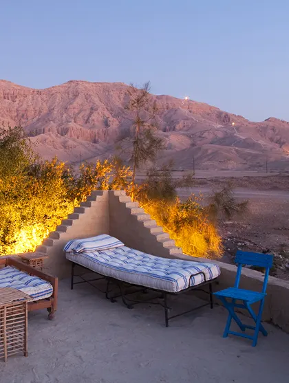
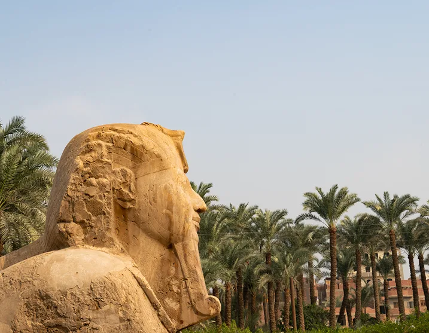
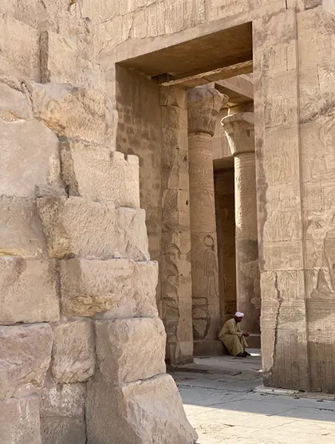

TRIP DESCRIPTION (FEBRUARY 16-24, 2024 / 8 NIGHTS)
An enchanting journey to discover some of the world’s most famous and enigmatic ancient treasures, our 8-night journey through Egypt explores the country’s tombs, temples, and museums. We will cruise up the mythical Nile for five nights on our own private dahabiya, a traditional sail boat.
We begin in Luxor, a veritable open air museum, where the exquisitely preserved complexes of Dendera and the Temple of Karnak offer a glimpse of former Pharaonic glory. Afterwards we will visit the Valley of the Kings which holds hidden tombs, including that of the 9-year-old King Tutankhamun. Next embark on a historic wooden dahabiya and sail to the Temple of Edfu, with a walk through ancient sandstone quarries and fishing villages, then on to the temple of Kom Ombo dedicated to the crocodile-headed god, Sobek. Along the way stop at fisherman villages with bracing dips in the Nile. A private charter to Abu Simbel brings us to the astounding temples of Ramses II.
Note: Travelers who wish to visit Cairo for the Great Pyramids of Giza may opt to begin their journey there before transferring to Luxor.

PRICING DETAILS
In order to confirm your reservation, a 50% non-refundable deposit is required at the time of purchase. The remaining balance will be charged 90 days prior to the beginning of the trip.
-Double Occupancy Room (2 people in 1 room): $12,785 per person
-Single Occupancy Room (1 person in 1 room): $17,895 per person

INCLUSIONS:
-Private chartered flights between Aswan and Abu Simbel
-Accommodations at Al Moudira in Luxor
-5-night private charter of a traditional dahabyia
-All transportation noted in the itinerary
-All tours and admission costs noted in itinerary
-All meals noted in itinerary
-Portage at airports and hotels
-Gratuities
EXCLUSIONS:
-International flights and entry visas to Egypt
-International arrival transfers
-Arrival flight to Luxor
-Departure flight from Abu Simbel
-Camera ticket at sites where allowed
-Travel Insurance
-Other meals and alcoholic beverages not stated in itinerary